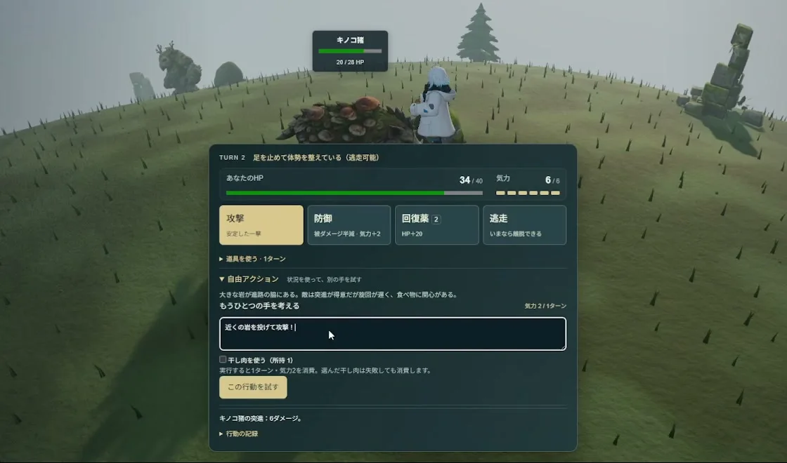
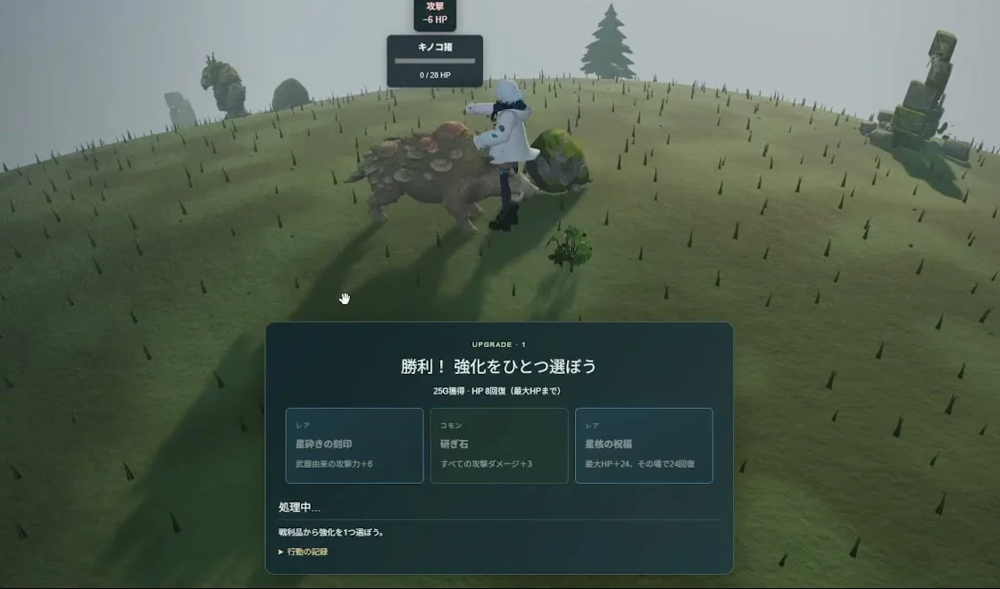

このUIがしていること
攻撃、防御、回復薬、逃走という決まったコマンドと、自由記述の行動が、同じパネルに並ぶ。自由記述は、いつでも選べる別の手として置かれている。
- 状況の説明が、自由記述の手がかりになっている。岩、旋回の遅さ、食べ物への関心が書かれており、何を書けば効きそうかを想像できる。
- 自由記述には費用がある（気力2、1ターン）。「選んだ干し肉は失敗しても消費します」とあり、失敗がありうることを先に伝えている。
- 判定の結果は、点数ではなく、HPやターンという世界の状態の変化として返る。「行動の記録」の欄もあるが、開いた中身は確認していない。
- なぜその結果になったかの説明は、掲載した画面には出ていない。
キャプチャ
{kind=link}

（原寸の画像を開く）{kind=link}

（原寸の画像を開く）見る箇所1枚目のターン表示、HPと気力、4つのコマンド、「自由アクション」の状況説明と入力欄、「この行動を試す」。2枚目の「処理中…」と、勝利後の強化の選択
入力から画面の変化まで
-
判断への入力
戦闘の状態（ターン、HP、気力、敵の構え）と、状況の説明（「大きな岩が進路の脇にある。敵は突進が得意だが旋回が遅く、食べ物に関心がある。」）。プレイヤーは「自由アクション」に行動を書く。例は「近くの岩を投げて攻撃！」。気力2と1ターンを使う。
-
Jevの判断
作者の投稿はJevを使ったゲームだと述べている。自由記述の行動が何として判定されたかは、画面に出ていない。
-
結果がUIをどう変えるか
送信すると「処理中…」が出て、コマンドが押せなくなる。その後、敵と自分のHP、気力、ターンが更新される。動画では敵のHPが20から0まで減り、「勝利！ 強化をひとつ選ぼう」の画面を経て、移動に戻る。
- 判断型の見立て
- 不明出典から判断できない
- 投稿はJevを使ったゲームと述べるが、自由記述の行動を何として判定しているか（質問型）は動画の画面から確認できない。
Jevとの適合
自由記述の行動を、その場の状況に照らして、成功や効果の区分へ落とす判断は、Jevに向く。ターン制のため、待ち時間は「処理中…」で吸収できる。判定が一貫しているか、状況の説明を正しく使っているかは、この動画からは評価できない。
確認範囲と未確認事項
日本語の作者による投稿動画から静止画を確認。遊べる公開版は確認していない。自由記述の行動をJevがどう判定したか、その確率や内訳は、動画の画面には出ていない。
- 確認済み動画から得た2枚の静止画に見えるターン、HPと気力、4つのコマンド、自由アクションの説明と入力欄、費用の表記、「処理中…」、強化の選択画面。動画の中で敵のHPが減り、移動に戻る流れ
- 未検証Jevへの入力と出力、判定の区分と確率、判定の一貫性、交渉の場面、遊べる公開版の有無。動画の文字は小さく、確率の表示があったとしても読み取れない
- 推定扱い自由記述の行動の判定にJevを使っているという読み方。投稿の説明と、送信後に「処理中…」を挟む流れからの見立て
- 引用動画から必要な範囲の静止画を切り出して引用。権利は作者に帰属する